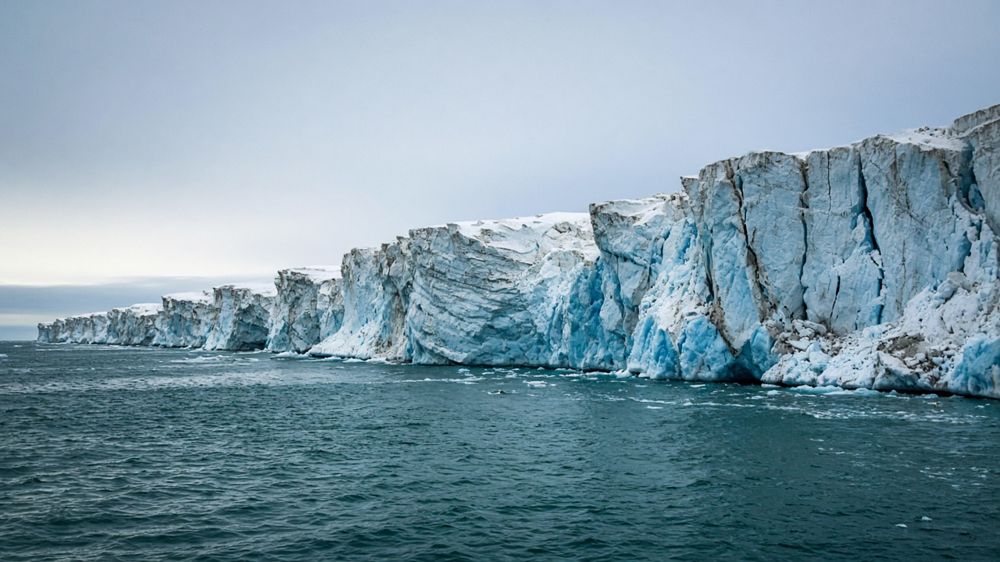
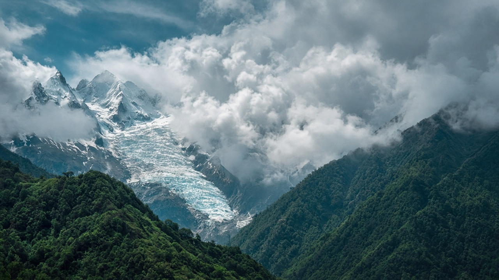

IPCC Reports & Climate Science
Published on July 6, 2026
The Intergovernmental Panel on Climate Change, known as the IPCC, is the leading international body for assessing the science related to climate change. Established by the United Nations, it synthesizes research from thousands of scientists worldwide without conducting its own experiments. Instead, it reviews peer-reviewed literature on topics ranging from atmospheric physics and oceanography to impacts on agriculture, health, and economies. IPCC assessment reports, issued in multi-year cycles, provide policymakers with authoritative summaries of what is known, what is uncertain, and what actions could limit future risks.
Each assessment cycle typically includes reports from three working groups and a synthesis report. Working Group I addresses the physical science basis of climate change, including emissions trends, temperature projections, and regional climate impacts. Working Group II examines vulnerabilities and adaptation options for human and natural systems. Working Group III focuses on mitigation pathways such as energy transformation, land-use change, and carbon removal. These reports undergo rigorous review by governments and experts, ensuring that conclusions reflect broad scientific consensus while clearly labeling levels of confidence and likelihood.
IPCC findings underpin national climate plans, corporate disclosures, and court cases involving environmental responsibility. They emphasize that human influence on the climate system is unequivocal and that limiting warming requires rapid, deep cuts in greenhouse gas emissions this decade. Special reports on oceans, cryosphere, land use, and 1.5-degree pathways provide focused guidance between full assessment cycles. For educators, journalists, and students, IPCC summaries for policymakers offer accessible entry points into complex science. While no single document captures every local detail—such as Himalayan glacier behavior or monsoon variability—they provide the global framework within which regional research and adaptation strategies must be designed and evaluated.

जलवायु परिवर्तनसँग सम्बन्धित विज्ञानको मूल्याङ्कन गर्ने अग्रणी अन्तर्राष्ट्रिय निकाय IPCC (जलवायु परिवर्तनका लागि अन्तरसरकारी प्यानल) हो। संयुक्त राष्ट्रसंघद्वारा स्थापित, यसले विश्वभरका हजारौं वैज्ञानिकहरूको अनुसन्धानलाई एकीकृत गर्छ तर आफैं प्रयोगशाला अनुसन्धान गर्दैन। यसको सट्टा, वायुमण्डलीय भौतिकशास्त्र र समुद्र विज्ञानदेखि कृषि, स्वास्थ्य र अर्थतन्त्रमा परेको प्रभावसम्मका विषयहरूमा समानान्तर समीक्षा गरिएका साहित्यको समीक्षा गर्छ। बहुवर्षीय चक्रमा जारी हुने IPCC का मूल्याङ्कन प्रतिवेदनहरूले नीति निर्माताहरूलाई के थाहा छ, के अनिश्चित छ, र भविष्यका जोखिमहरू सीमित गर्नका लागि कुन कार्यहरू गर्न सकिन्छ भन्ने बारेमा आधिकारिक सारांश प्रदान गर्छ।
प्रत्येक मूल्याङ्कन चक्रमा सामान्यतः तीन कार्य समूहका प्रतिवेदनहरू र एक संश्लेषण प्रतिवेदन समावेश हुन्छ। कार्य समूह I ले उत्सर्जन प्रवृत्ति, तापक्रम पूर्वानुमान र क्षेत्रीय जलवायु प्रभावहरू सहित जलवायु परिवर्तनको भौतिक वैज्ञानिक आधार सम्बोधन गर्छ। कार्य समूह II ले मानव र प्राकृतिक प्रणालीहरूका लागि असुरक्षाहरू र अनुकूलन विकल्पहरूको अध्ययन गर्छ। कार्य समूह III ले ऊर्जा परिवर्तन, भू–उपयोग परिवर्तन र कार्बन हटाउने जस्ता न्यूनीकरण मार्गहरूमा केन्द्रित हुन्छ। यी प्रतिवेदनहरू सरकार र विशेषज्ञहरूद्वारा कडा समीक्षाबाट गुज्रन्छन्, जसले निष्कर्षहरू व्यापक वैज्ञानिक सहमति प्रतिबिम्बित गर्छन् भने विश्वास र सम्भावनाको स्तर स्पष्ट रूपमा खुलाउँछ।
IPCC का निष्कर्षहरूले राष्ट्रिय जलवायु योजनाहरू, कर्पोरेट खुलासा र वातावरणीय जिम्मेवारी सम्बन्धी अदालतका मुद्दाहरूलाई आधार दिन्छ। तिनीहरूले जलवायु प्रणालीमा मानव प्रभाव निर्विवाद छ भन्ने र तापक्रम वृद्धि सीमित गर्न यस दशकमा ग्रीनहाउस ग्यास उत्सर्जनमा छिटो र गहिरो कटौती आवश्यक छ भन्ने जोड दिन्छ। महासागर, क्रायोस्फियर, भू–उपयोग र १.५ डिग्री मार्गहरूसम्बन्धी विशेष प्रतिवेदनहरूले पूर्ण मूल्याङ्कन चक्रहरू बीचमा केन्द्रित मार्गदर्शन प्रदान गर्छ। शिक्षक, पत्रकार र विद्यार्थीहरूका लागि नीति निर्माताहरूका लागि IPCC सारांशहरूले जटिल विज्ञानमा पहुँचयोग्य प्रवेश बिन्दु प्रदान गर्छ। कुनै एक कागजातले हिमालयन हिमनदीको व्यवहार वा मनसुनको परिवर्तनशीलता जस्ता स्थानीय विवरणहरू समेट्दैन, तर तिनीहरूले क्षेत्रीय अनुसन्धान र अनुकूलन रणनीतिहरू डिजाइन र मूल्याङ्कन गर्नुपर्ने विश्वव्यापी ढाँचा प्रदान गर्छ।

जलवायु परिवर्तन से संबंधित विज्ञान का आकलन करने वाला अग्रणी अंतरराष्ट्रीय निकाय IPCC (इंटरगवर्नमेंटल पैनल ऑन क्लाइमेट चेंज) है। संयुक्त राष्ट्र द्वारा स्थापित, यह दुनिया भर के हजारों वैज्ञानिकों के शोध को संकलित करता है बिना स्वयं प्रयोग किए। इसके बजाय, यह वायुमंडलीय भौतिकी और समुद्र विज्ञान से लेकर कृषि, स्वास्थ्य और अर्थव्यवस्था पर पड़ने वाले प्रभावों तक के विषयों पर समीक्षित साहित्य का अध्ययन करता है। बहुवर्षीय चक्रों में जारी IPCC मूल्यांकन रिपोर्टें नीति निर्माताओं को यह बताती हैं कि क्या ज्ञात है, क्या अनिश्चित है, और भविष्य के जोखिमों को सीमित करने के लिए कौन से कदम उठाए जा सकते हैं।
प्रत्येक मूल्यांकन चक्र में आमतौर पर तीन कार्य समूहों की रिपोर्टें और एक संश्लेषण रिपोर्ट शामिल होती है। कार्य समूह I उत्सर्जन के रुझान, तापमान अनुमान और क्षेत्रीय जलवायु प्रभावों सहित जलवायु परिवर्तन के भौतिक वैज्ञानिक आधार को संबोधित करता है। कार्य समूह II मानव और प्राकृतिक प्रणालियों की कमजोरियों और अनुकूलन के विकल्पों की जांच करता है। कार्य समूह III ऊर्जा परिवर्तन, भू–उपयोग परिवर्तन और कार्बन हटाने जैसे शमन मार्गों पर केंद्रित है। इन रिपोर्टों की सरकारों और विशेषज्ञों द्वारा कड़ी समीक्षा होती है, जिससे निष्कर्ष व्यापक वैज्ञानिक सहमति को दर्शाते हैं और विश्वास तथा संभावना के स्तर स्पष्ट रूप से बताए जाते हैं।
IPCC के निष्कर्ष राष्ट्रीय जलवायु योजनाओं, कॉर्पोरेट प्रकटीकरण और पर्यावरणीय जिम्मेदारी से जुड़े अदालती मामलों का आधार बनते हैं। वे इस बात पर जोर देते हैं कि जलवायु प्रणाली पर मानव प्रभाव निर्विवाद है और गर्मी को सीमित करने के लिए इस दशक में ग्रीनहाउस गैस उत्सर्जन में तेज और गहरी कटौती आवश्यक है। महासागर, क्रायोस्फियर, भू–उपयोग और 1.5 डिग्री मार्गों पर विशेष रिपोर्टें पूर्ण मूल्यांकन चक्रों के बीच केंद्रित मार्गदर्शन प्रदान करती हैं। शिक्षकों, पत्रकारों और छात्रों के लिए नीति निर्माताओं हेतु IPCC सारांश जटिल विज्ञान में सुलभ प्रवेश बिंदु प्रदान करते हैं। कोई एक दस्तावेज़ हिमालयी हिमनदी के व्यवहार या मानसून की परिवर्तनशीलता जैसे स्थानीय विवरण नहीं पकड़ता, लेकिन वे वैश्विक ढांचा प्रदान करते हैं जिसके भीतर क्षेत्रीय शोध और अनुकूलन रणनीतियों को डिजाइन और मूल्यांकित किया जाना चाहिए।